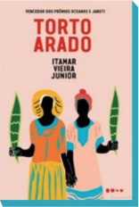
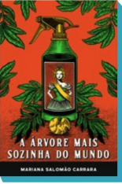
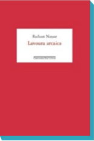
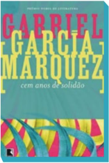
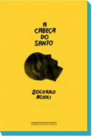
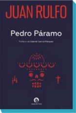

Da mesma estante
Brasis Rurais
Para ler o país além das grandes cidades, uma seleção de boas histórias distantes dos centros urbanos e próximos do Brasil de todos os tempos
-

Torto Arado,
Itamar Vieira Junior
Todavia, 262 pp.
No interior da Bahia, movidas pela curiosidade encantadora e perigosa da infância, as irmãs Bibiana e Belonísia encontram uma faca ambaixo da cama da avó e sofrem um acidente que conecta as duas de forma emblemática e definitiva - a ponto de uma precisar ser a voz da outra.
-

A árvore mais sozinha do mundo,
Mariana Salomão Carrara
Todavia, 208 pp.
Da vencedora do Prêmio São Paulo de Literatura 2023, a história de uma família de agricultores no sul do Brasil, sua ligação com a terra e a luta pela sobrevivência, contada por um mosaico impressionantes de narradores inanimados.
-

Lavoura arcaica,
Ruduan Nassar
Companhia das Letras, 200 pp.
Um jovem do interior abandona a casa da família para viver na capital, fugindo da paixão que sente por sua irmã e dos limites rígidos de uma criação religiosa e de um pai autoritário. Obra fundamental da literatura contemporânea.
Realismo mágico latino-americano
Colômbia, Brasil e México se revelam e se confundem em narrativas inaugurais e contemporâneas do gênero
-

Cem anos de solidão,
Gabriel García Márquez
Record, 448 pp.
Na referência mácima do gênero e um dos maiores clássicos da literatura mundial, o vencedor do Prêmio Nobel de Literatura narra a fabulosa história de várias gerações da família Buendía na fictícia cidade de Macondo, um território que parece pertencer ao imaginário de qualquer país da América Latina.
-

A cabeça do santo,
Socorro Acioli
Companhia das Letras, 176 pp.
No Ceará, um jovem chega a uma cidade esvaziada e encontra abrigo na imensa cabeça oca de uma estátua inacabada de Santo Antônio. Ele descobre que, lá denttro, ganha o estranho dom de ouvir as preces de amor das mulheres para o santo, atraindo fiéis de outros lugares para contemplar sua fantástica habilidade.
-

Pedro Páramo,
Juan Rulfo
José Olympio, 176 pp.
Depois de perder a mãe, Juan Preciado vai a Comala, uma cidade rural no México, procurando por seu pai, Pedro Páramo, um lendário assassino. Um clássico da literatura mexicana marcado por sua atmosfera surrealista, prosa concisa e profundidade afetiva.